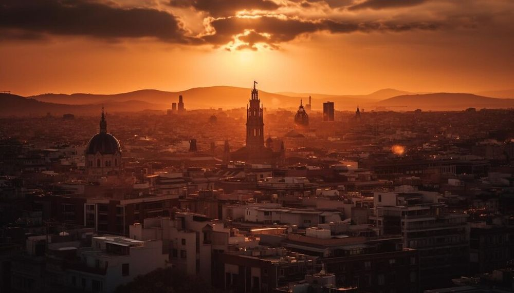

Descoperă Bologna - O incursiune în cultura și istoria bogată a Italiei
Bologna este un oraș vibrant și istoric din Italia, cunoscut pentru arhitectura sa medievală și mâncarea delicioasă:
-

Piazza Maggiore - Centrul istoric
Una dintre cele mai mari piețe medievale din Europa, înconjurată de clădiri impresionante.
-

Due Torri - Simbol al orașului
Aceste turnuri înalte sunt un punct de reper al Bolognei și oferă priveliști panoramice.
-

Bazilica San Petronio - Bijuterie gotică
O catedrală impresionantă cu arhitectură gotică și opere de artă valoroase.
-

Archiginnasio - Patrimoniu universitar
O clădire istorică care adăpostea prima universitate din lume, cu săli impresionante.
-

Delicii culinare - Mâncare tradițională
Bologna este cunoscută ca fiind "capitala gastronomică" a Italiei, cu paste și specialități unice.
Concluzii
Bologna oferă o combinație perfectă de istorie, cultură și bucate delicioase pentru o experiență autentic italiană.